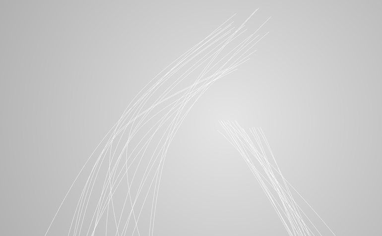

Narrative Phenomenon
本作は我々が日々会話の中で語っている様々な話に形と動きがあるとするならば、どのような振る舞いをするかを探求している。
作中の白線は我々が語る出来事を表しており、ある時間で区切られた一連のアクションの塊である。一つひとつの出来事は様々な視点からそれぞれ違う形で語られ、少しずつずれている。出来事は「語り」が作り出す空間と時間を持った「物語世界」の中を駆ける。
本作はジェラール・ジュネット（Gérard Genette, 1930-2018）の『物語のディスクール』を基に制作している。
, openFrameworks

「語り」について
「語り」について説明をする上で、ここでの「語り」の簡潔な定義を決めておきたい。「語り」とは、「ある者が語り手となり、ある話の内容を別の聞き手に伝える行為」とここでは定義する。
上記で述べたように、「語り」は語りの「内容」とその「行為」に分類することができる。語りの「内容」とは実際に起きた出来事のことを指す。例えば、私の朝ごはんの「内容」は最初に豆のサラダを食べる。その後にパンと目玉焼きを食べる。最後にコーヒーを飲む。朝ごはんの実際の出来事を羅列することができ、これは語りの「行為」自体と分けられる。
本作では、「内容」と「行為」それぞれの長さと順序に着目している。
語りの「内容」と「行為」はそれぞれ違う長さを持っている。先ほどあげた例で言えば、実際に朝ごはんを食べるのに掛かった時間の長さは20分程だ。しかし、この内容を誰かに伝えるとするならば、「朝ごはんを食べた」という一言で済ませることができる。これが語りの「内容」と「行為」の長さの違いだ。
次に着目したのは順序だ。時間と同様に「内容」と「行為」で順序も変わる。これを説明するための良い例が野坂昭如による短編小説『火垂るの墓』の冒頭シーンである。物語は主人公が駅の構内で死んでいった場面から始まる。その後カットバックで神戸大空襲へと場面が戻り、物語が進んでいく構成になっている。出来事の順番を入れ替えることで「内容」を効果的に印象付けることができる。